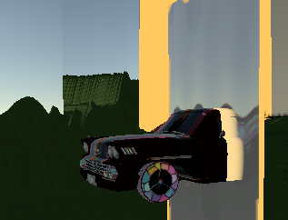

整理URP目前碰到的一些问题
自从用了URP之后，发现URP相对Built-In来说确实有很多方便的地方，在shader编写上也完善了。
但是可能因为URP目前学习资源相对还是较少，大多数人应该都是踩了不少坑的。
因此，个人搜集了一些URP中自己踩过的坑，算是留个记录也是方便分享。
当然，实力不强，本身也是还在研究URP的过程中，如果说内容中有错误的地方或者需要改进的地方，欢迎指出。
印象中在Built-in里做传送门的时候，是不会因为放入输入深度但不输入颜色的物体导致Frame Buffer不写入的。
URP中skybox虽然属于背景，但是RenderQueue是2500，如果关闭物体的深度写入，最后会直接被skybox盖住。
然后现在假如我遇到了这样的需求：做一个传送门，这个门所在的平面把整个空间分为两份，你只有站在门前世界看向这个传送门中，
才能看见门后世界的东西，否则哪怕绕到了门后也没法看到后面的东西。
这是一个非常经典的模板测试应用，我会用隐形的墙把“门后世界”的物体包进去，然后用传送门写入模板值，通过模板测试来删去隐形墙的一部分。
墙会写入深度，从而达到在“门后世界”不通过门也看不到背后物体的效果。
当然隐形墙和传送门本身都不会写入颜色（ColorMask 0），墙本身就不能显示颜色，
传送门的颜色可以通过RenderFeature在另一个Pass中在Trasnparent顺序里用blend显示
但是由于URP为了优化渲染，天空盒的渲染顺序在2500，这导致墙写入的深度值会导致skybox不被渲染，而墙本身也不会写入颜色，
这导致天空盒被挡住的那一部分不会写入任何颜色，要么继承上一帧的颜色值，要么显示黑色，形成错误的拖尾效果。

而由于墙要去挡住不透明物体，Geometry的Queue在2500之前，并且传送门写入模板值的顺序还要在墙之前，所以墙只能在2500之前去渲染，
在不修改天空盒渲染顺序的情况下，这个问题就变得非常难解，而改变渲染顺序就要牺牲URP给天空盒带来的优化。
当然如果要做这个传送门效果，估计也只能选择后者了。
顺带一提，算了不提了，做透明顺序特效的Pass大伙应该都会，不献丑了。
在Google的一些回答中找到了很多不同的答案，但最后翻源码一个一个试下来发现答案是要加入一个Lightmode="DepthNormals"的Pass
（URP版本为12.1）。
但是这个Pass似乎按名字是写入深度法线图吧，在源码中还有另外一个Lightmode是写入深度图的，但是加入那个pass并没有效果，不知道
到底是urp的问题还是我的问题。
另外，URP中只有渲染顺序在2500以前的物体才会写入深度图，虽然是热知识，但是当时我也搞了好久才知道……
在URP中CommandBuffer的Blit可以对RenderTargetIdentifier使用，而后者相比RenterTexture是一个更为完整的结构体，不过因为我没有找到
从RenderTargetIdentifier直接获得RenderTexture的方法，所以在需要设置材质的纹理资源，即material.SetTexture()的时候，依然需要用
RenderTexture来实现，目前还没有找到相关的方法。
当时我以为是工程出问题了，因为之前问题3的原因我把内存弄爆了很多次，好几次工程都闪退了，但当我打开VolumeProfile的.asset文件时发现我
加进去的那些效果全都在里面，只是每次打开工程的时候unity并没有进行读取。
后来在知乎上找到了答案，是因为我为了管理方便，把所有继承了VolumeComponent的后处理效果类都放在了同一个文件里，而VolumeProfile读取
后处理效果的规则是文件名必须和类名一样，这意味着每有一个后处理效果，我就得新建一个和它类名相同的文件，尽管实际上文件内容只有几行用来
声明控制shader的变量的代码。